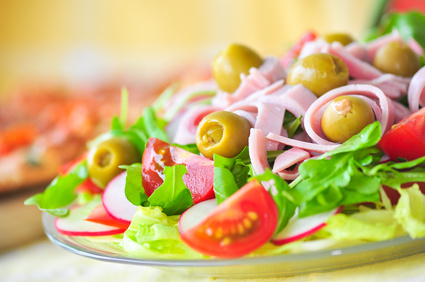

Rezepte für den Abend
Schnelles Abendessen | Leckere Kochideen | Kitchen Stories

Täglich neue Rezepte
Kitchen Stories
Download Startseite Kategorien Schnelle Gerichte Schnelles AbendessenSchnelles Abendessen
Archiv
2.699 25 Min.Miso-Pasta mit Kirschtomaten und Sesam-Crunch
Profil von Ruby GossKitchen Stories
2.894 20 Min.5-Zutaten Orecchiette mit Erbsen und knusprigem Parmaschinken
Profil von Ruby GossKitchen Stories
148,1k 25 Min.One-Pot-Pasta
Profil von VerenaKitchen Stories
99,6k 30 Min.Penne alla Norma
Profil von Alex HillerKontributor
97,6k 20 Min.Nudeln mit Schinken-Sahne-Soße
Profil von VerenaKitchen Stories
19,2k 30 Min.Djuvec-Reis
Profil von Sandra SchumannKontributor
72,3k 20 Min.Pasta Verde
Profil von TeamKitchen Stories
68,6k 30 Min.Cremiges indisches Curry mit Hähnchenbrust
Profil von Alex HillerKontributor
19,1k 20 Min.Penne all’Arrabbiata
Profil von Devan GrimsrudKitchen Stories
56,5k 30 Min.Köttbullar
Profil von TeamKitchen Stories
58,5k 20 Min.Klassisches Pad Thai
Profil von MengtingKitchen Stories
49k 25 Min.Scharfe Kichererbsensuppe
Profil von TeamKitchen Stories
17,4k 30 Min.Rotes Thai Curry mit Hähnchen
Profil von Hanna RederKitchen Stories
49,6k 30 Min.Pasta mit Rinderfiletstreifen in cremiger Pilzsoße
Profil von Alex HillerKontributor
21,4k 20 Min.5-Zutaten Pasta mit rotem Paprikapesto
Profil von Devan GrimsrudKitchen Stories
14,9k 30 Min.Pasta mit sonnengetrockneten Tomaten und Rucola
Profil von Carla MatthäusKontributor
25,5k 20 Min.One-Pot-Pasta mit Spinat
Profil von TeamKitchen Stories
22,9k 20 Min.Spaghetti mit cremiger Avocado-Limetten-Sauce
Profil von Sebastian CopienKontributor
13,3k 30 Min.Pad See Ew (Thailändische Reisnudelpfanne)
Profil von Christian RußKitchen Stories
17,5k 25 Min.Tagliatelle mit Lachs in Spinat-Sahnesoße
Profil von Alex HillerKontributor
12,7k 30 Min.Lachs vom Blech mit Frühlingszwiebeln und Knoblauchbutter
Profil von Christian RußKitchen Stories
20,2k 20 Min.Knuspriger Schweinebauch aus dem Wok
Profil von YingpinKontributor
18,2k 20 Min.Aubergine mit Hackfleisch in Knoblauchsoße
Profil von YingpinKontributor
19,3k 20 Min.Lachsfilet mit pikanter Limetten-Honig-Glasur
Profil von GoodnesCommunity Mitglied
Erste Seite « Vorherige Seite ‹ page 1 page 2 page 3 page 4 page 5 page 6 page 7 Nächste Seite › Letzte Seite »Posted by Jack  Read more
Read more  Comments (15)
Comments (15)  2021.06.18 09:21
2021.06.18 09:21